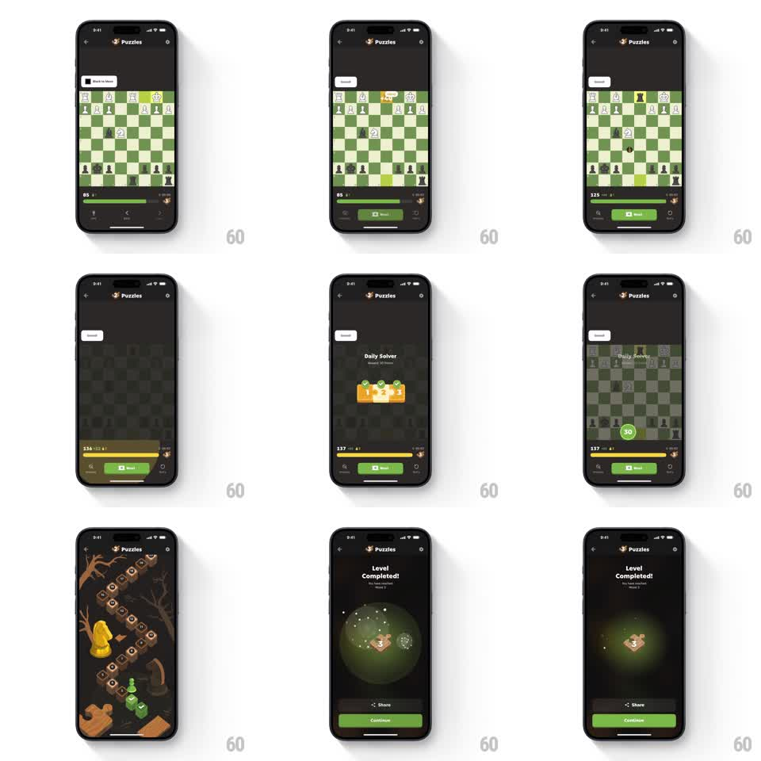

Media
Frame-by-frame

Rebuild this animation 1:1: Chess.com's Daily Solver reward sequence - after solving, the score counter ticks up with coin blips, the board fades into a "Daily Solver" badge card, a "30" streak chip lands on the board, the world map lights a new stop, and the sequence ends on a "Level Completed!" screen with a glowing green orb and particle fireworks over Share / Continue buttons.

Rebuild this animation 1:1: Chess.com's Daily Solver reward sequence - after solving, the score counter ticks up with coin blips, the board fades into a "Daily Solver" badge card, a "30" streak chip lands on the board, the world map lights a new stop, and the sequence ends on a "Level Completed!" screen with a glowing green orb and particle fireworks over Share / Continue buttons. ## Integration Integration: stack-agnostic spec - springs given as stiffness/damping, timed motions as duration + curve; map every value to your framework and animation library of choice. ## Scene Dark Chess.com Puzzles UI. Sequence of states: solved board with a bottom score pill ticking up (85 -> 125 -> 136 -> 137); a "Daily Solver" card with a three-step progress bar; a green "30" chip popping onto the board; an isometric world-map path with a new stop lighting up; and a final "Level Completed!" screen with a glowing green orb, a small character inside, fireworks, Share and Continue buttons. ## Motion spec Pattern: multi-stage post-solve reward chain with ticking counters and fireworks. - Score tick: the bottom pill's number rolls up in increments (+40, then +11, then +1) with a coin blip each step (120ms apart, digit roll 100ms). - The board dims and the "Daily Solver" card fades up center (250ms) with its progress segments filling left to right (300ms). - A green "30" streak chip springs onto the board (scale 0.5 -> 1.15 -> 1.0, spring ~320/16) with a soft glow. - Map view: the camera pans along the isometric path (600ms ease-in-out) and the new stop lights with a pulse ring (scale 1 -> 2 fade, 500ms). - Finale: "Level Completed!" fades up (250ms), the green orb breathes (scale 1.0 -> 1.05, 2s sine) with sparkle particles drifting up, and two firework bursts go off above the orb (radial particles, 12-16 per burst, 700ms, gravity fade). - Share and Continue buttons slide up (280ms, 80ms stagger). ## Calibration - Counter ticks are audible-feeling - short, discrete steps, not a smooth scroll. - Fireworks are sparse (two bursts); the orb glow is the centerpiece. ## Reduced motion Counters set instantly, each stage crossfades (200ms), fireworks replaced by a static glow. ## Don't miss - The sequence is chained - each stage waits for the previous to settle before starting. - The green "30" chip lands on the board itself, tying the streak to the puzzle.